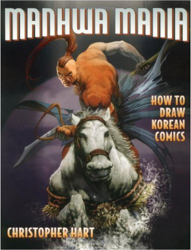
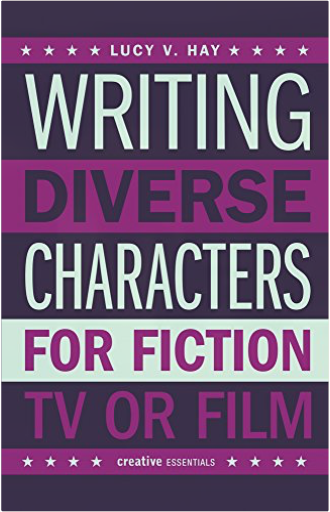
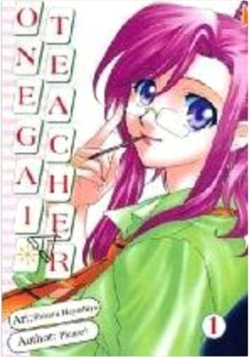
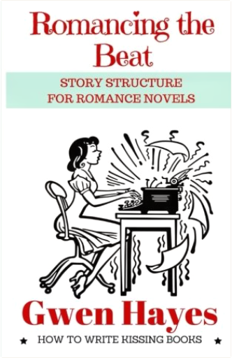
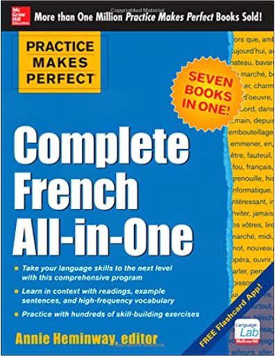
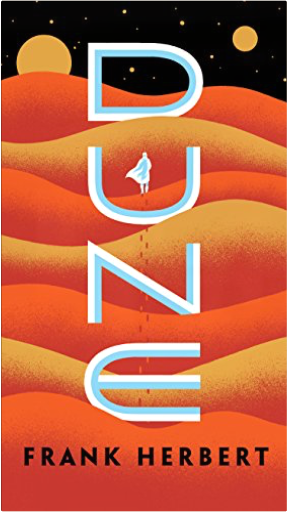

Manga for the Beginner: Everything you Need to Start Drawing Right Away!Christopher Hart Got manga? Christopher Hart’s got manga, and he wants to share it with all his millions of readers—especially the beginners. With Manga for the Beginner, anyone who can hold a pencil can start drawing great manga characters right away. Using his signature step-by-step style, Hart shows how to draw the basic manga head and body, eyes, bodies, fashion, and more. Then he goes way beyond most beginner titles, exploring dynamic action poses, special effects, light and shading, perspective, popular manga types such as animals, anthros, and shoujo and shounen characters. By the end of this big book, the new artist is ready to draw dramatic story sequences full of movement and life.  Manhwa Mania: How to Draw Korean ComicsChristopher Hart Manhwa—Korean for comics—is fast becoming the next big craze in Asian comics. Many fans of manga don't realize that their favorite comics, like Priest, Ragnarock, and Island, are actually manhwa, not Japanese manga. This tutorial helps artists master the differences between manga and manhwa, including less focus on big eyes and more on expressions and personality, replacing spiky hair with a more natural look, and drawing characters that don't typically possess magical powers but are instead fierce fighters made of flesh and blood. Artists learn through a step-by-step process how to draw the entire range of manhwa characters-from the extreme fighting-machine heroes and giant beasts to the sexy women, anti-heroes, and evil warlords.  Writing Diverse Characters for Fiction, TV or FilmLucy V. Hay We’re living in a time of unprecedented diversity in produced media content, with more LGBT characters, more characters of color, more disabled characters, and more characters from various religions or classes. These characters also appear in genre pieces, accessible to the mainstream, instead of being hidden away in so-called "worthier" pieces, as in the past. This book discusses issues of race, disability, sexuality, and transgender people with specific reference to characterization in movies, TV, and novel writing. Using such examples as the film Mad Max: Fury Road and the novel Gone Girl, the book explores how character role function really works. It discusses such questions as the difference between stereotype and archetype, why "trope" does not mean what Twitter and Tumblr think it means, how the burden of casting affects both box office and audience perception, and why diversity is not about agendas, buzzwords or being "politically correct." It also goes into what authenticity truly means, and why research is so important; why variety is key in ensuring true diversity in characterization; and what agents, publishers, producers, filmmakers, and commissioners are looking for—and why.  Onegai Teacher Book 1Shizuru Hayashiya ONEGAI TEACHER VOL.1
Kei Kusanagi was your typical ordinary senior in High School. However his life became more complicated the day his class got a new teacher. On the outside she looked like your typical beautiful young school teacher, but Kei had witnessed her secret the night before. When exploring a strange light in a nearby forest the night before Kei discovers a mysterious floating woman. To his surprise she winds up being his new teacher and next door neighbor. Now can Kei balance the craziness of school life, his new neighbor, and the fact she’s an alien? Onegai Teacher Volume 2Shizuru Hayashiya, Yosuke Kuroda ONEGAI TEACHER VOL.2
Kei and Mizuho are bombarded with hardships as their love is tested again and again. Misunderstandings, petty bickering, and jealousy rock the relationship foundation of the interstellar teacher and this common earth boy. Admitting one’s love is merely the first step and will be challenged throughout time. Find out if Kei and Mizuho have what it takes to live happily ever after in the second and final volume of Onegai Teacher.  Romancing the Beat: Story Structure for Romance NovelsGwen Hayes What makes a romance novel a romance? How do you write a kissing book?
Writing a well-structured romance isn't the same as writing any other genre—something the popular novel and screenwriting guides don't address. The romance arc is made up of its own story beats, and the external plot and theme need to be braided to the romance arc—not the other way around.
Told in conversational (and often irreverent) prose, Romancing the Beat can be read like you are sitting down to coffee with romance editor and author Gwen Hayes while she explains story structure. The way she does with her clients. Some of whom are regular inhabitants of the New York Times and USA Today bestseller lists.
Romancing the Beat is a recipe, not a rigid system. The beats don't care if you plot or outline before you write, or if you pants your way through the drafts and do a "beat check" when you're revising. Pantsers and plotters are both welcome. So sit down, grab a cuppa, and let's talk about kissing books.
For free Scrivener template and plotting printables to use with the book, please visit the author's website: gwenhayes.com/free-stuff  Practice Makes Perfect: Complete French All-in-OneAnnie Heminway Get five times the language-learning expertise for the price of one book!More than a million students have turned to the Practice Makes Perfect series for a trusted guide to help build their language-learning skills. And, now this bestselling brand offers you all of the tools you need to learn French in one value-packed workbook. Practice Makes Perfect: Complete French All-in-One covers all facets of a language to give you a solid foundation of verbs, vocabulary, grammar, and conversational structures. This one-stop resource features thorough explanations that are reinforced by hundreds of hands-on practice exercises that give you real confidence in your new language skills. |  DuneFrank Herbert Frank Herbert’s classic masterpiece—a triumph of the imagination and one of the bestselling science fiction novels of all time—nominated as one of America’s best-loved novels by PBS’s The Great American Read.
Set on the desert planet Arrakis, Dune is the story of the boy Paul Atreides—who would become known as Muad’Dib—and of a great family’s ambition to bring to fruition humankind’s most ancient and unattainable dream.
A stunning blend of adventure and mysticism, environmentalism and politics, Dune won the first Nebula Award, shared the Hugo Award, and formed the basis of what is undoubtedly the grandest epic in science fiction. Pagan and Earth-Centered Voices in Unitarian UniversalismJerrie Kishpaugh Hildebrand, editor, Shirley Ann Ranck These 22 essays by some of the most prominent leaders in Unitarian Universalist Paganism bring Pagan and Earth-centered theo/alogy to life for a new generation. Featuring the writings of both clergy and laypeople, this vibrant collection demonstrates the many expressions of nature-based spirituality and the ways they feed the souls of so many. The essayists describe a broad array of practices, including Wiccan traditions, Neo-Pagan rituals and celebrations, worship of the divine feminine, and nature-based beliefs and practices that bring us into harmony and balance with our natural environment. Contributors also describe the development of nature-based theo/alogy within Unitarian Universalism including the organization of the Covenant of Unitarian Universalist Pagans, the addition of the sixth Source to the UUA bylaws recognizing Earth-centered spirituality, and the integration of Pagan practices into congregational life. Writers of the Future Vol 34: #1 Bestselling Sci-Fi & Fantasy Short Stories of the YearL. Ron Hubbard, Brandon Sanderson, Jody Lynn Nye, Orson Scott Card, Jerry Pournelle, Echo Chernik, Erik Bundy, Erin Cairns, Jonathan Ficke, Jeremy TeGrotenhuis, Vida Cruz, Darci Stone, Cole Hehr, Janey Bell, Eneasz Brodski, N.R.M. Roshak, Diana Hart, Amy Henrie Gillett 24 Award-Winning Authors and Illustrators
Accompanied by Orson Scott Card, Brandon Sanderson, Jody Lynn Nye, Jerry Pournelle, Ciruelo and Echo Chernik and Edited by David Farland
Your search for something new and different in sci-fi and fantasy ends here.
Presenting this year’s collection of fresh voices, fabulous worlds, and fantastic new characters.
Each year, the Writers and Illustrators of the Future Contests’ blue-ribbon judges search the world to discover and introduce to you the very best new talent in sci-fi and fantasy.
Created by L. Ron Hubbard, whose commitment to help new writers and artists gave rise to the annual Writers of the Future anthologies—a launching pad for writers and artists who are sure to command our attention for decades to come.
“Writers of the Future, as a contest and as a book, remains the flagship of short fiction.” —Orson Scott Card
“The best new stories by new writers, anywhere.” —Larry Niven
“These are the people who are going to be creating trends.” —Brandon Sanderson
“Science fiction as a genre has always looked to the future and the Writers of the Future looks to the future of science fiction.” —Kevin J. Anderson
“See the best of the best culled for you, curated and selected in a single volume every year.” —Robert J. Sawyer
Wondrous and powerful tales from some of the world’s best new writers
Turnabout—Djinn are famous for twisting your words so they don’t really grant your wish, but two can play that game.
A Smokeless and Scorching Fire—Deacon is a government official, and he’s afraid he’ll stay that way if he can’t break his conditioning.
The Howler on the Sales Floor—It’s easy making sales when you can send images of despair into the hearts of your clients.
The Minarets of An-Zabat—Alder seeks the secrets of the Windcallers’ magic, but his curiosity may destroy the people he loves.
The Death Flyer—Jim Bellamy tries to save the life of a girl who died in the wreckage of a train ten years ago.
Odd and Ugly—A tree giant takes in a housekeeper, but she has more secrets than either of them can handle.
Mara’s Shadow—An ancient myth might provide the key to curing a disease that threatens all of humanity.
The Lesson—A lesson on philosophy in action turns into a deadly encounter.
What Lies Beneath—A powerful sorcerer has so disgraced himself, he is afraid of what his family will think should he ever die and meet them on the other side.
The Face in the Box—Cara discovers a floating farm parked over her land, blocking the sunlight, and must confront the driver.
Flee, My Pretty One—In a world controlled by dragons and their henchmen, rock singer Josephine really only wants “death to all collaborators.”
Illusion—Even a court wizard will struggle to fight off armies if his weapons pack no actual punch.
A Bitter Thing—You can put an end to something wondrous, but only at a cost.
Miss Smokey—Lily’s ability to shift shapes into a bear offers some strange challenges.
All Light and Darkness—On a far world, a nameless man meets a woman of ancient genetic stock, and when trouble follows in his wake, he must choose: her life or his humanity? The Sleep Revolution: Transforming Your Life, One Night at a TimeArianna Huffington Co-founder and editor in chief of The Huffington Post Arianna Huffington shows how our cultural dismissal of sleep as time wasted compromises our health and our decision-making and undermines our work lives, our personal lives—and even our sex lives in this New York Times bestseller.
We are in the midst of a sleep deprivation crisis, with profound consequences to our health, our job performance, our relationships and our happiness. What we need is nothing short of a sleep revolution: only by renewing our relationship with sleep can we take back control of our lives.
In The Sleep Revolution, Arianna explores all the latest science on what exactly is going on while we sleep and dream. She takes on the sleeping pill industry, and all the ways our addiction to technology disrupts our sleep. She also offers a range of recommendations and tips from leading scientists on how we can get better and more restorative sleep, and harness its incredible power.
The result is a sweeping, scientifically rigorous, and deeply personal exploration of sleep from all angles, from the history of sleep, to the role of dreams in our lives, to the consequences of sleep deprivation, and the new golden age of sleep science that reveals the vital role sleep plays in our every waking moment and every aspect of our health—from weight gain, diabetes, and heart disease to cancer and Alzheimer’s.
In today's fast-paced, always-connected, perpetually-harried and sleep-deprived world, our need for a good night’s sleep is more important—and elusive—than ever. The Sleep Revolution both sounds the alarm on our worldwide sleep crisis and provides a detailed road map to the great sleep awakening that can help transform our lives, our communities, and our world. Manga Classics: Les Miserables HardcoverVictor Hugo Adapted for stage and screen, loved by millions, Victor Hugo's classic novel of love & tragedy during the French Revolution is reborn in this fantastic new manga edition! The gorgeous art of TseMei Lee brings to life the tragic stories of Jean Valjean, Inspector Javert, and the beautiful Fantine, in this epic adaptation of Les Miserables! Platform: Get Noticed in a Noisy WorldMichael Hyatt Michael Hyatt, one of the top business bloggers in the world, provides down-to-earth guidance for building and expanding a powerful platform.
To be successful in the market today, you must possess two strategic assets: a compelling product and a meaningful platform. In this step-by-step guide, Michael Hyatt, former CEO and current Chairman of Thomas Nelson Publishers, takes readers behind the scenes, into the new world of social media success. He shows you what best-selling authors, public speakers, entrepreneurs, musicians, and other creatives are doing differently to win customers in today’s crowded marketplace. Hyatt speaks from experience. He writes one of the top 800 blogs in the world and has more than 100,000 followers on Twitter. His large and growing platform serves as the foundation for his successful writing, speaking, and consulting practice.
In Platform, Hyatt will teach readers not only how to extend their influence, but also how to monetize it and build a sustainable career. The key? By building a platform. It has never been easier, less expensive, or more possible than right now. . . The book includes: proven strategieseasy-to-replicate formulaspractical tips
Social media technologies have changed everything. Now, for the first time in history, non-celebrities can get noticed―and win big!―in an increasingly noisy world. |


 Made with Delicious Library
Made with Delicious Library